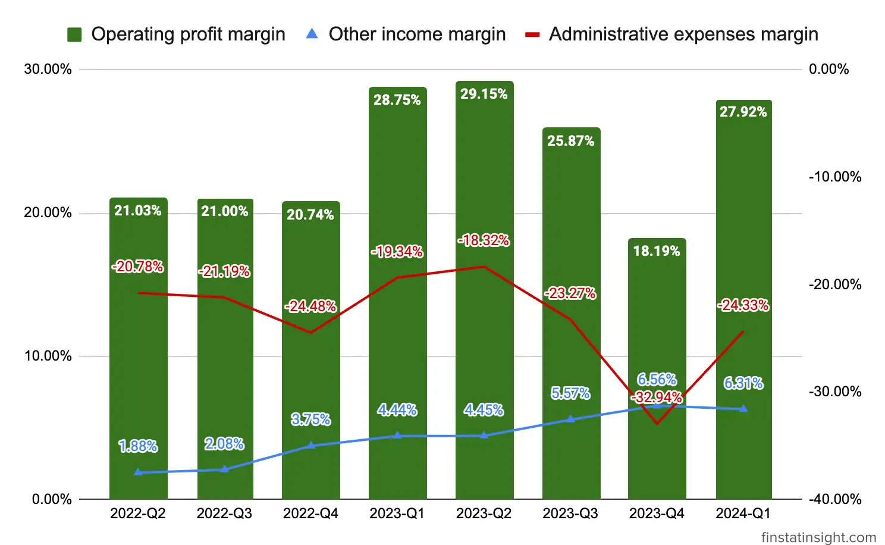

In the current quarter Q1-2024 concluding on September 30, 2023, Cengild Medical Berhad achieved a revenue of RM17.60 million. This marks a notable growth of RM1.83 million, equivalent to 11.62%, when juxtaposed with the preceding quarter concluding on June 30, 2023, which reported revenue of RM15.77 million. The upswing in revenue can be primarily attributed to the heightened volume of patients, leading to an augmentation in both endoscopic procedures and surgeries conducted.
The Group’s Profit Before Tax (PBT) experienced a substantial uptick, rising by approximately RM2.07 million or 77.66% from the immediate preceding quarter’s figure of RM2.67 million to reach RM4.74 million in the current financial quarter. This notable increase can be attributed to three key factors:
Below is table consists of 3 quarters Profit & Loss Statements data. | Quarters | 2023-Q3 | 2023-Q4 | 2024-Q1 | |——————————-|———|———|———| | Periods | 3/31/2023 | 6/30/2023 | 9/30/2023 | | Revenue | 17,670 | 15,771 | 17,604 | | Cost of sales | -9,972 | -8,725 | -9,516 | | Gross profit (GP) | 7,698 | 7,046 | 8,088 | | Other income | 985 | 1,035 | 1,110 | | Staff costs | 0 | 0 | 0 | | Administrative expenses | -4,111 | -5,195 | -4,283 | | Other expense | | -17 | | | Profit/(loss) from Operations | 4,572 | 2,869 | 4,915 | | Finance costs | -175 | -201 | -175 | | Profit/(loss) before tax (PBT) | 4,397 | 2,668 | 4,740 | | Taxation | -1,141 | -430 | -1,141 | | Profit/(loss) after tax (PAT) | 3,256 | 2,238 | 3,599 | | Total comprehensive income for the financial period | 3,256 | 2,238 | 3,599 | | Profit for the financial period attributable to Owners of the Company | 3,256 | 2,238 | 3,599 | | Total comprehensive income for the financial period attributable to Owners of the Company | 3,256 | 2,238 | 3,599 | | Earnings per share attributable to Owners of the Company: Basic/Diluted (sen) | 0.39 | 0.27 | 0.43 |
Revenue Growth: The revenue increased from 15,771 in 2023-Q4 to 17,604 in 2024-Q1, showcasing a positive growth trend.
Costs and Gross Profit: Cost of sales increased from -8,725 to -9,516 in tandem with revenue upswing, but still able to record the Gross Profit (GP) from 7,046 to 8,088.
Let’s see further from the Gross Profit Margin trends charts below from the 1st time back in Q2-2022 until now Q1-2024. Revenues, cost of sales and gross profits amount are steady from quarter to other quarter.
It makes the revenue growth rate its not compeling for investors. But, if we looks further, Cengild Medical’s gross profit margin every quarters are quite steady increased from beginning at 39.96% up to now 45.94%. Thanks to better cost of sales measurement each of the quarters.

Other Income: Other income increased gradually from 985 to 1,110, contributing positively to the overall income.
Operating Expenses: Administrative expenses reduced from -5,195 to -4,283, indicating a potential improvement in operational efficiency.
Profit from Operations: Profit from operations increased from 2,869 in 2023-Q4 to 4,915 in 2024-Q1, reflecting a substantial improvement in operational performance.
Looking at the charts trends on the profit from operations from quarters to quarters, Cengild’s core business activities is still maintain its profit well every quarters, with others income show gradual increase which is good for the business.

On its operation profit margin, Cengild managed to maintain above 20% margin for each quarters except on previous Q4-2023 which only 18.19% due to increased on administrative expense which reached 32.94% rate.

Finance Costs: Finance costs remained relatively stable around -175 in each quarter.
Profit Before Tax (PBT): PBT increased from 2,668 in 2023-Q4 to 4,740 in 2024-Q1, indicating improved profitability before accounting for taxes.
Taxation: Taxation increased from -430 to -1,141, possibly due to higher profits.
Profit After Tax (PAT): Profit after tax increased from 2,238 in 2023-Q4 to 3,599 in 2024-Q1, reflecting the company’s ability to retain more earnings after tax.

This Q1-2024, Cengild shown profit after tax margin improvement significantly compared to earlier quarter, reached 20.44% margin rate.

Earnings Per Share (EPS): Earnings per share increased from 0.27 in 2023-Q4 to 0.43 in 2024-Q1, suggesting positive financial performance on a per-share basis.
In summary, the company experienced growth in revenue, effective cost management, improved operational performance, and increased profitability. The positive trends in earnings and comprehensive income suggest favorable financial health during the analyzed periods.
Given the performance of the Group 3-month financial period ended 30 September 2023, the Board of Directors expect the Group’s prospects for the financial year ending 30 June 2024 to be favourable – Cengild Medical Berhad Q1-2024 Interim Financial Report ***
Cengild Medical Berhad has plan to expand to other major cities in Malaysia in the future, but for now, they only have the one branch.
Cengild Medical Berhad (Cengild) is a Malaysian healthcare company specializing in gastroenterology, hepatology, and gastrointestinal surgery. Founded in 2017 with heardquarter in Bangsar South, Kuala Lumpur. Key focus areas: gastroenterology, hepatology, gastrointestinal surgery (upper GI, hepatobiliary, pancreatic, colorectal, and bariatric), interventional radiology.
Headquarters Location
Listed on Bursa Malaysia
Key Points: